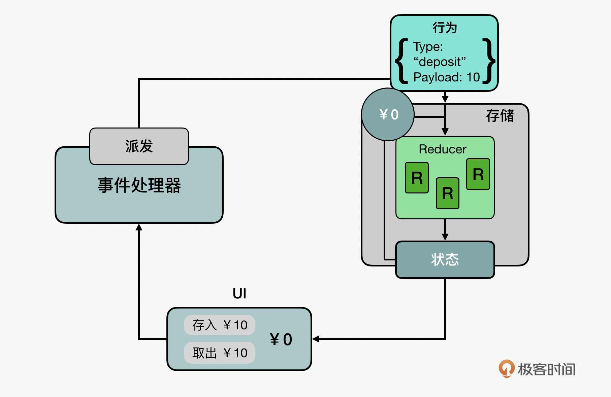

- 00 开篇词 JavaScript的进阶之路.md.html
- 01 函数式vs.面向对象：响应未知和不确定.md.html
- 02 如何通过闭包对象管理程序中状态的变化？.md.html
- 03 如何通过部分应用和柯里化让函数具象化？.md.html
- 04 如何通过组合、管道和reducer让函数抽象化？.md.html
- 05 map、reduce和monad如何围绕值进行操作？.md.html
- 06 如何通过模块化、异步和观察做到动态加载？.md.html
- 07 深入理解对象的私有和静态属性.md.html
- 08 深入理解继承、Delegation和组合.md.html
- 09 面向对象：通过词法作用域和调用点理解this绑定.md.html
- 10 JS有哪8种数据类型，你需要注意什么？.md.html
- 11 通过JS引擎的堆栈了解闭包原理.md.html
- 12 JS语义分析该用迭代还是递归？.md.html
- 13 JS引擎如何实现数组的稳定排序？.md.html
- 14 通过SparkPlug深入了解调用栈.md.html
- 15 如何通过哈希查找JS对象内存地址？.md.html
- 16 为什么环形队列适合做Node数据流缓存？.md.html
- 17 如何通过链表做LRU_LFU缓存？.md.html
- 18 TurboFan如何用图做JS编译优化？.md.html
- 19 通过树和图看如何在无序中找到路径和秩序.md.html
- 20 算法思想：JS中分治、贪心、回溯和动态规划.md.html
- 21 创建型：为什么说Redux可以替代单例状态管理.md.html
- 22 结构型：Vue.js如何通过代理实现响应式编程.md.html
- 23 结构型：通过jQuery看结构型模式.md.html
- 24 行为型：通过观察者、迭代器模式看JS异步回调.md.html
- 25 行为型：模版、策略和状态模式有什么区别？.md.html
- 26 特殊型：前端有哪些处理加载和渲染的特殊“模式”？.md.html
- 27 性能：如何理解JavaScript中的并行、并发？（上）.md.html
- 28 性能：如何理解JavaScript中的并行、并发？（下）.md.html
- 29 性能：通过Orinoco、Jank Busters看垃圾回收.md.html
- 30 网络：从HTTP_1到HTTP_3，你都需要了解什么？.md.html
- 31 安全：JS代码和程序都需要注意哪些安全问题？.md.html
- 32 测试（一）：开发到重构中的测试.md.html
- 33 测试（二）：功能性测试.md.html
- 34 测试（三）：非功能性测试.md.html
- 35 静态类型检查：ESLint语法规则和代码风格的检查.md.html
- 36 Flow：通过Flow类看JS的类型检查.md.html
- 37 包管理和分发：通过NPM做包的管理和分发.md.html
- 38 编译和打包：通过Webpack、Babel做编译和打包.md.html
- 39 语法扩展：通过JSX来做语法扩展.md.html
- 40 Polyfill：通过Polyfill让浏览器提供原生支持.md.html
- 41 微前端：从MVC贫血模式到DDD充血模式.md.html
- 42 大前端：通过一云多端搭建跨PC_移动的平台应用.md.html
- 43 元编程：通过Proxies和Reflect赋能元编程.md.html
- 结束语 JavaScript的未来之路：源于一个以终为始的初心.md.html
- 捐赠
21 创建型：为什么说Redux可以替代单例状态管理
你好，我是石川。
时间过得真快，今天要开始专栏的第三个模块“JavaScript之术”了，前面我们已经了解了函数式和面向对象的编程模式、JavaScript 的数据结构与算法，从这节课开始，我们会展开讲解JavaScript用到的设计模式，结合一些三方的库，来帮助你理解和掌握如何通过设计模式进一步提高“生产力”，优化“生产关系”。
一般在介绍设计模式的时候，都会先说到创建型模式。创建型模式里又包含几种设计模式，最为大家熟知的，可能要数单例模式了，在很多语言中它经常被用来做状态管理。这节课，我们就来看看这种模式的优劣势，以及 Javascript 的 Redux 是怎么解决单例在状态管理中所面临的一些问题的。除了单例模式，我也会延伸讲解几个其他的创建型模式。下面我们还是先从单例模式本身说起吧。
单例模式
在ES6之前，单例模式在JavaScript中除了状态管理，其实更经常被用来做封装和命令空间。而在ES6以后，JS中已经加入了很多防止全局污染的手段。比如通过新增加的let和const两个关键字，将使用这两个关键字声明的变量保持在块范围内，创建全局变量已经很少见了。同时，JavaScript中的新加入的模块系统（modular system）使创建全局可访问的值更容易，而不会污染全局范围，这是因为它是从模块中导出值，并将这些值再导入其他文件中的。所以对于开发者来说，单例剩下的一个场景，就是状态管理了。
单例模式主要用于在应用程序中共享一个全局实例。这意味着使用同一个类创建两次对象的时候，第二次应该得到和第一次相同的对象。在JavaScript中，使用对象字面量创建一个对象本身就可以视作是单例的一个实现。当你创建一个新对象的时候，就已经是单例对象了。为什么这么说呢？因为在 JavaScript 中，对象永远不会相等，除非它们是同一个对象，因此即使我们创建两个具有完全相同属性的对象，它们也不会是相同的：
var obj1 = {
myprop: 'my value'
};
var obj2 = {
myprop: 'my value'
};
obj1 === obj2; // false
通过下面的例子，我们可以看到一个简单的单例实现。
首先是创建一个全局的计数器，和一个包含加减方法的计数器。为了防止这个计数器被改动，我们可以采用freeze冻结对象的方法。最后，我们可以把计数器组件导出，之后如果有不同的模块导入同一个计数器组件并进行加减操作调用的话，得到的是基于同一个计数的加减结果。
var count = 0;
var counter = {
increment() {
return ++count;
},
decrement() {
return --count;
}
};
Object.freeze(counter);
export { counter };
单例模式下的状态管理
我们在讲到函数式编程模式的时候，说过它的一个重要思想就是要考虑副作用（side effect）。为什么单例式通常被认为是一个反模式，是因为基于副作用的考虑。
我们曾说过面向对象和函数式设计模式之间不是非此即彼的概念，而是可以互补的。单例的常见用例是在整个应用程序中拥有某种全局状态。这可能会导致代码库中依赖同一个可变对象的多个部分对它的修改产生冲突。因为通常，代码库的某些部分会修改全局状态中的值，而其他部分会使用该数据。执行顺序也是一个考量，我们不想在数据没进来的时候就不小心先消费数据，而导致异常。在相对复杂的程序中，随着组件数量的增长以及之间的相互依赖，不同的数据流之间的用全局状态管理会变得很难。
函数式编程的状态管理
那么面对以上的问题该怎么办呢？在 React 中，我们经常通过 Redux 或 React Context 等状态管理工具来管理全局状态，而不是使用单例对象。这里面就用了很多函数式编程的思想来替代单例模式来解决这些副作用。下面我们就来看看这种方案是怎么实现的。
虽然Redux 或 React Context 中也有全局状态，相关的行为可能看起来类似于单例，但这些工具提供了只读状态而不是单例的可变状态。比如在使用Redux时，只有纯函数reducer 才能在组件通过调度程序发送一个动作触发后的更新状态。使用这些工具不可能完全消除全局状态的缺点，但因为组件不能直接更新状态，这样做至少可以确保全局状态按照预期方式发生变化。
Redux的意图可以概括为三个原则：第一，全局的状态都在一个store里保存；第二，这个store里的状态对于整个应用来说都是只读的；第三，如果需要更新改变状态的话，则需要通过reducer来完成。
我们可以通过一个例子来看看。下图中UI界面有一个存款显示功能，显示目前的存款为0；界面上还有两个按钮分别带有存入和取出的功能。在开始的时候，当有人点击存入10元的动作时，一个存储的事件会传到事件处理器。
这个时候，事件处理器会对相关行为的数据打包为动作对象（action object），里面包含了动作类型字段，你可以将动作对象视为描述应用程序中发生的事件的对象。在这个例子中，类型就是“存入”，相关palyload的记录为“10”。动作对象打包好后会派发到存储器。
这个时候存储器会先调用已有的状态，也就是说当前的存款数量是0，加上10元，相加的合就是10元。reducer 是一个接收当前状态和行为对象的函数，如果需要，它会决定如何更新状态，并返回新状态(state, action) => newState。 你可以将 reducer 视为事件监听器，它根据接收到的操作（事件）类型处理事件。
reducer遵循一些特定规则，你也值得了解：第一，reducer只基于状态和行为动作这两个参数来计算新的状态值；第二，它必须遵循不可变原则，不能更改已有的状态，而只能拷贝状态并在拷贝的版本上做修改；第三，是reducer会避免任何副作用，比如异步操作。

另外，Redux 存储有一个称为 dispatch 的方法。更新状态的唯一方法是调用 store.dispatch() 并传入一个动作对象。store 将运行 reducer 函数并将新的 state 值保存在里面，我们可以调用 getState() 来检索更新的状态值。
Redux 还有一个 Selector（选择器）知道如何从存储状态值中提取特定信息的函数。随着应用程序变得越来越大，这有助于避免重复逻辑，因为应用程序的不同部分需要读取相同的数据。最后，当存储器里的工作完成后，UI获得了更新后的10元状态值。
Redux 使用“单向数据流”应用程序结构。也就是说，第一，状态描述应用程序在某个时间点的状态，UI 会根据该状态呈现。第二，当应用程序发生某些事件变化时：比如 UI 的一个调度动作、store 运行 reducer、状态根据发生的事件情况更新、store通知UI状态已更改时，UI根据新状态重新渲染。这里我们可以看到，Redux的设计理念虽然不能说百分之百避免状态管理中的副作用，但是从很大程度上说，它要比单例模式更加有效的多。
工厂模式
除了单例，今天我还会介绍两个常见的创建型模式：工厂模式和原型模式。我们先来看看工厂模式，工厂模式，是使用工厂函数来创建对象的。它可以使我们调用工厂，而不是直接使用 new 运算符或 Object.create() 从类中创建新对象。在 JavaScript 中，工厂模式只不过是一个不使用 new 关键字就返回对象的函数。
工厂允许我们将对象的创建与其实现分开。本质上，工厂包装了新实例的创建，从而为我们提供了更多的灵活性和控制权。在工厂内部，我们可以选择使用 new 运算符创建类的新实例，或者利用闭包动态构建有状态的对象字面量，甚至可以根据特定条件返回不同的对象类型。工厂的消费者完全不知道如何创建实例。事实是，通过使用 new，我们将代码绑定到一种创建对象的特定方式，而使用工厂，我们可以拥有更大的灵活性。
它的优势是，如果我们要创建相对复杂和可配置的对象，工厂模式会很有用。对象中的键值取决于特定环境或配置的情况。使用工厂模式，我们可以轻松创建包含自定义键和值的新对象。当我们必须创建多个共享相同属性的较小对象时，工厂函数可以根据当前环境或用户特定的配置轻松返回自定义对象。相对的，它的劣势是它可能占用更多的内存。在相对没有那么复杂的情况下，每次创建新实例而不是新对象可能更节省空间。
工厂模式在JavaScript中有很多体现。比如 Object() 本身就像工厂。因为它根据输入创建不同的对象。如果你将数字传递给它，它可以在后台使用 Number() 构造函数创建一个对象。类似的还有字符串和布尔值。任何其他值，包括空值，都将创建一个普通对象。下面我们可以看一个例子。Object() 也是一个工厂这一事实并没有什么实际用途，只是通过这个例子，你能看到工厂模式在JavaScript中是无处不在。
var o = new Object(),
n = new Object(1),
s = Object('1'),
b = Object(true);
// test
o.constructor === Object; // true
n.constructor === Number; // true
s.constructor === String; // true
b.constructor === Boolean; // true
还有一个非常常见的例子就是我们说箭头函数（arrow function）就是工厂模式。之所以这么说是因为如果箭头函数体由单个表达式组成的话，在函数创建时会间接返回一个对象，所以是一个小型工厂函数。
var createUser = (userName) => ({ userName: userName });
createUser("bar"); // {userName: 'bar'}
createUser("foo"); // {userName: 'foo'}
原型模式
原型模式对于JavaScript来说不算陌生了，原型就是在许多相同类型的对象之间共享属性。
如果是从非JavaScript角度看，很多其他语言对原型模式的介绍中会使用到类（class）。而实际在JavaScript的情况下，原型继承可以避免用到类。这样做是利用它自身的优势，而不是试图模仿其他语言的特性。原型模式不仅让继承实现起来更简单，而且还可以提高性能，在对象中定义函数时，它们都是通过引用创建的（因此所有子对象都指向同一个函数），而不是创建单个副本。因为我们在前面的面向对象中已经用了很大篇幅来介绍原型模式，所以在这里我们就不做赘述了。
总结
最后，我们做个小结。今天我带你了解了几种不同创建型模式。希望你对这些模式有了不同于教科书说法的视角，比如我们看到在解决单例的问题上，针对前端的应用，如何因地制宜地解决相关的状态管理问题。JavaScript对状态管理并没有只是通过传统的单例和相关解决方案，而是另辟蹊径，通过函数式编程的思想，巧妙地利用了纯函数、不可变性等特点更好的解决了问题。所以我们说哪一种模式都不是死的，而是可以在具体的情况中灵活结合地应用。
思考题
给你留个思考题，在说到单例模式时，虽然我们看到了Redux是如何解决状态管理问题的。但是JavaScript并不是只用在前端的语言，比如在Node，也有很多后端的用例使用这些创建型模式，你能分享下你的应用场景、遇到的相关问题，和一些解决方案吗？
欢迎在留言区分享你的答案、交流学习心得或者提出问题，如果觉得有收获，也欢迎你把今天的内容分享给更多的朋友。我们下期再见！
© 2019 - 2023 Liangliang Lee. Powered by gin and hexo-theme-book.